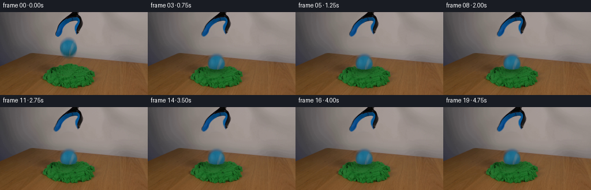
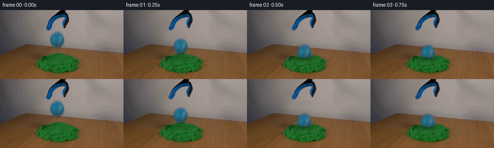

CODING AGENTS AS PIXEL WORLD MODELS
traex/GPT-6.1-Sol · 0018
点击播放 · 原生 RGB 像素
逐轮保存的候选
回放视频、检查图与代码变化。
每份候选均可单独播放。实际图片检查记录在下方工具轨迹中。
候选 01播放与检查图
点击播放 · 原生 RGB 像素
展开代码变化
--- 上一保存版本
+++ 本次保存版本
@@ -0,0 +1,173 @@
+"""Photo-preserving analytic animation of the release and soft sand impact."""
+from pathlib import Path
+import numpy as np
+from PIL import Image
+import cv2
+from scipy.ndimage import gaussian_filter, map_coordinates, distance_transform_edt
+import artifact_io
+
+ROOT = Path(__file__).resolve().parent
+H,W = 144,256
+Y,X=np.mgrid[:H,:W].astype(np.float32)
+source=np.array(Image.open(ROOT/'first_frame.png').convert('RGB'))
+photo=source.astype(np.float32)
+rng=np.random.default_rng(61018)
+
+# The ball is photographed with a shallow, soft focus. Recover its matte and
+# texture against the locally interpolated neutral backdrop rather than redraw it.
+cx,cy=118.3,61.65
+wall=photo.copy()
+left=gaussian_filter(photo[:,95:100].mean(1), (0.7,0))
+right=gaussian_filter(photo[:,138:143].mean(1), (0.7,0))
+for x in range(99,139):
+ u=(x-97)/43
+ wall[:,x]=left*(1-u)+right*u
+# Restrict reconstruction to the photographic footprint, including its soft fringe.
+rad=np.sqrt(((X-cx)/1.0)**2+((Y-cy)/1.035)**2)
+erase=np.clip((21.0-rad)/2.6,0,1)
+erase[Y<43]=0
+plate=photo*(1-erase[...,None])+wall*erase[...,None]
+# The colour difference gives an excellent edge matte on this neutral wall.
+alpha=np.clip((wall[:,:,0]-photo[:,:,0])/(wall[:,:,0]-29),0,1)
+alpha*=np.clip((21-rad)/2.5,0,1)
+alpha=np.maximum(alpha,np.clip((13.4-rad)/1.0,0,1))
+alpha[(rad>21)|(Y<43)|(Y>81)]=0
+# Ignore sub-percent noise in the neutral background.
+alpha[alpha<0.035]=0
+ball=(photo-wall*(1-alpha[...,None]))/np.maximum(alpha[...,None],.08)
+ball=np.clip(ball,0,255)
+# Extremely faint edge colours are extended from the nearest reliable felt pixel.
+reliable=(alpha>.7)&(rad<17)
+_, inds=distance_transform_edt(~reliable,return_indices=True)
+extended=ball[inds[0],inds[1]]
+faint=alpha<.2
+ball[faint]=extended[faint]
+
+# Original tool silhouettes are retained, with just a small final opening of the
+# fingers. The bridge and handle never move; no camera or backdrop changes occur.
+toolzone=(X>90)&(X<145)&(Y<44)
+talpha=np.clip((148-photo[:,:,0])/66,0,1)*toolzone
+talpha[photo[:,:,0]<77]=np.where(toolzone[photo[:,:,0]<77],1,0)
+talpha[talpha<.08]=0
+# Exclude the neutral wall, and isolate the one connected implement.
+core=((photo[:,:,0]<108)&toolzone).astype(np.uint8)
+num,lab,stats,_=cv2.connectedComponentsWithStats(core,8)
+idx=1+np.argmax(stats[1:,cv2.CC_STAT_AREA])
+region=cv2.dilate((lab==idx).astype(np.uint8),np.ones((3,3),np.uint8))
+talpha*=region
+mask=cv2.dilate((talpha>.04).astype(np.uint8),np.ones((3,3),np.uint8))
+tplate=cv2.inpaint(source,mask,3,cv2.INPAINT_TELEA).astype(np.float32)
+# Use the recovered backdrop only within the tool's footprint.
+tool_bg=tplate
+tex=(photo-tool_bg*(1-talpha[...,None]))/np.maximum(talpha[...,None],.06)
+tex=np.clip(tex,0,255)
+_, ti=distance_transform_edt(talpha<.8,return_indices=True)
+tex[talpha<.2]=tex[ti[0],ti[1]][talpha<.2]
+# Combine the two disjoint reconstruction areas.
+plate=np.where(mask[...,None]>0,tool_bg,plate)
+
+
+def sample(a, xx, yy):
+ if a.ndim==2:
+ return cv2.remap(a.astype(np.float32),xx.astype(np.float32),yy.astype(np.float32),cv2.INTER_LINEAR,borderMode=cv2.BORDER_CONSTANT)
+ return cv2.remap(a.astype(np.float32),xx.astype(np.float32),yy.astype(np.float32),cv2.INTER_LINEAR,borderMode=cv2.BORDER_CONSTANT)
+
+def composite(im,col,a):
+ return im*(1-a[...,None])+col*a[...,None]
+
+def tool(im,t):
+ opening=1-np.exp(-t/0.15)
+ l=((X<120)&(Y>14)).astype(np.float32)*np.clip((Y-14)/28,0,1)**1.25
+ r=((X>124)&(Y>16)).astype(np.float32)*np.clip((Y-16)/23,0,1)**1.15
+ ux=X+3.4*opening*l-2.3*opening*r
+ uy=Y+.5*opening*(l+r)
+ a=sample(talpha,ux,uy)
+ co=sample(tex,ux,uy)
+ return composite(im,co,a)
+
+# A tiny number of cohesive grains move with the yielded sand, not a liquid splash.
+grains=[]
+for side in [-1,1]:
+ for j in range(3):
+ grains.append((side,95+side*0 if False else 118+side*(16+j*3.3),97+j*1.8,
+ side*(6+j*3),-8-j*1.4,.38+.12*j))
+
+frames=[]
+g=440.0
+contact_cy=75.4
+contact_time=np.sqrt(2*(contact_cy-cy)/g)
+for i in range(20):
+ t=i/4
+ if i==0:
+ frames.append(source.copy());continue
+ after=max(0.,t-contact_time)
+ # Damped penetration into energy-absorbing kinetic sand. There is no elastic bounce.
+ if t<contact_time:
+ bc=cy+.5*g*t*t
+ deform=0.
+ else:
+ deform=1-np.exp(-after/.105)
+ bc=contact_cy+13.7*deform+.55*np.exp(-after/.20)*np.sin(after*21)
+ bx=cx+.45*(1-np.exp(-after/.2))
+ # Local inverse mapping: the grain texture compresses into a shallow crater,
+ # moving a little downward and sideways. Rest of table and pile remain untouched.
+ dx=X-118.5
+ locality=np.exp(-((Y-96)/17)**2)*np.exp(-(dx/26)**4)
+ vertical=6.7*deform*np.exp(-(dx/15.8)**4)*np.exp(-((Y-93)/15)**2)
+ lateral=1.5*deform*np.tanh(dx/7)*locality
+ active=np.clip((Y-83)/5,0,1)*np.clip((127-Y)/6,0,1)
+ sx=X-lateral*active
+ sy=Y-vertical*active
+ im=sample(plate,sx,sy)
+ green=(im[:,:,1]>im[:,:,0]*1.35)&(im[:,:,1]>im[:,:,2]*1.2)&(Y>84)
+ # Ball shadow tightens as it descends. A small cavity shadow persists around
+ # the sides, consistent with the shaded original granular surface.
+ shadow=np.exp(-((X-(bx+1.4))/16.0)**2-((Y-99.5)/5.5)**2)
+ amount=(.06+.14*min(1,(bc-cy)/22))*shadow*green
+ cavity=np.exp(-((X-bx)/16.5)**4-((Y-98.5)/7.7)**2)*.13*deform*green
+ im*=1-(amount+cavity)[...,None]
+ im=tool(im,t)
+ # Transport the photographed felt, its pale seams, and its original shading.
+ ux=X-bx+cx
+ uy=Y-bc+cy
+ a=sample(alpha,ux,uy)
+ co=sample(ball,ux,uy)
+ # Real-time exposure blur while airborne, kept slight at this short drop height.
+ if t<contact_time:
+ blur=.75
+ a2=sample(alpha,ux,uy+blur)
+ a3=sample(alpha,ux,uy-blur)
+ prem=co*a[...,None]
+ prem=(prem*.6+sample(ball,ux,uy+blur)*a2[...,None]*.2+sample(ball,ux,uy-blur)*a3[...,None]*.2)
+ a=.6*a+.2*a2+.2*a3
+ co=prem/np.maximum(a[...,None],1e-5)
+ # Front bank masks the bottom of the ball. A softly irregular raised lip
+ # hugs the ball, avoiding a pasted-on circular silhouette.
+ u=(X-bx)/16.0
+ lip=99.2-3.4*np.clip(u*u,0,1)+.28*np.sin(X*2.1)+.15*np.cos(X*.77)
+ fore=np.clip((Y-lip+.45)/1.1,0,1)*green*deform
+ a*=1-fore
+ im=composite(im,co,a)
+ # Front lip is built from the existing sand grain colours; subtle highlight
+ # makes the compacted bank legible without drawing a smooth synthetic mound.
+ liplight=np.exp(-((Y-lip-.55)/.75)**2)*np.exp(-(u/.88)**6)*.105*deform*green
+ im+=im*liplight[...,None]
+ # Minimal granular flaking during impact, quickly settling beside the dent.
+ if after>0:
+ for side,x0,y0,vx,vy,size in grains:
+ s=min(after,.36)
+ px=x0+vx*s
+ py=y0+vy*s+26*s*s
+ opacity=.72*deform
+ if after>.36:
+ px=x0+vx*.36;py=y0+vy*.36+26*.36**2
+ opacity*=.45
+ dot=np.exp(-((X-px)/size)**2-((Y-py)/(size*.8))**2)*opacity
+ colour=np.array([48,103,31],np.float32)
+ im=composite(im,colour,dot)
+ frames.append(np.clip(np.rint(im),0,255).astype(np.uint8))
+
+frames=np.stack(frames)
+artifact_io.save(frames,ROOT)
+if __name__=='__main__':
+ print('Saved',frames.shape,'RGB frames; first frame identical:',np.array_equal(frames[0],source))
候选 02播放与检查图
点击播放 · 原生 RGB 像素


展开代码变化
--- 上一保存版本
+++ 本次保存版本
@@ -3,7 +3,7 @@
import numpy as np
from PIL import Image
import cv2
-from scipy.ndimage import gaussian_filter, map_coordinates, distance_transform_edt
+from scipy.ndimage import gaussian_filter, distance_transform_edt
import artifact_io
ROOT = Path(__file__).resolve().parent
@@ -28,7 +28,7 @@
erase[Y<43]=0
plate=photo*(1-erase[...,None])+wall*erase[...,None]
# The colour difference gives an excellent edge matte on this neutral wall.
-alpha=np.clip((wall[:,:,0]-photo[:,:,0])/(wall[:,:,0]-29),0,1)
+alpha=np.clip((wall[:,:,0]-photo[:,:,0])/np.maximum(wall[:,:,0]-29,1),0,1)
alpha*=np.clip((21-rad)/2.5,0,1)
alpha=np.maximum(alpha,np.clip((13.4-rad)/1.0,0,1))
alpha[(rad>21)|(Y<43)|(Y>81)]=0
@@ -83,13 +83,16 @@
uy=Y+.5*opening*(l+r)
a=sample(talpha,ux,uy)
co=sample(tex,ux,uy)
- return composite(im,co,a)
+ result=composite(im,co,a)
+ # Exact, unchanged original pixels for the stationary handle and bridge.
+ result[Y<=14]=photo[Y<=14]
+ return result
# A tiny number of cohesive grains move with the yielded sand, not a liquid splash.
grains=[]
for side in [-1,1]:
for j in range(3):
- grains.append((side,95+side*0 if False else 118+side*(16+j*3.3),97+j*1.8,
+ grains.append((side,118+side*(16+j*3.3),97+j*1.8,
side*(6+j*3),-8-j*1.4,.38+.12*j))
frames=[]
可观测工具轨迹
实际执行的命令与返回图片。
命令 1exit 0
/bin/bash -lc 'ls -la && cat prompt.txt && cat GENERATION_RULES.md'
命令 2exit 0
/bin/bash -lc "cat artifact_io.py && python - <<'PY'
from PIL import Image
import numpy as np
im=np.array(Image.open('first_frame.png'));print(im.shape)
# summarize pixel color coordinates via coarse dominant characterization
for y in range(0,144,3):
s=''
for x in range(0,256,3):
r,g,b=im[y:y+3,x:x+3].mean((0,1))
if g>r*1.3 and g>b*1.15: c='G'
elif b>r*1.5 and b>g*1.05: c='B'
elif max(r,g,b)<45:c='#'
elif max(r,g,b)<85:c='d'
elif r>g*1.25 and r>b*1.4:c='w'
elif min(r,g,b)>190:c=' '
elif min(r,g,b)>130:c='.'
else:c=':'
s+=c
print(f'{y:3}',s)
PY"命令 3exit 0
/bin/bash -lc "python - <<'PY'
from PIL import Image
import numpy as np
from scipy.ndimage import label
im=np.array(Image.open('first_frame.png'))
r,g,b=im.astype(float).transpose(2,0,1)
m=(b>r*1.5)&(b>g*1.05)
l,n=label(m)
for j in range(1,n+1):
y,x=np.where(l==j)
if len(x)>10: print(j,len(x), (x.min(),y.min(),x.max(),y.max()),im[y,x].mean(0))
for region in [(94,40,138,82),(85,0,141,45),(70,84,160,133)]:
x0,y0,x1,y1=region
print('\\nREGION',region)
for y in range(y0,y1):
st=''
for x in range(x0,x1):
r,g,b=map(int,im[y,x]);v=(r+g+b)/3
if b>r*1.5 and b>g*1.05:
st+='123456789'[min(8,int(b/29))]
elif g>r*1.3 and g>b*1.15:st+='G' if g>110 else 'g'
elif v<45:st+='#'
elif v<80:st+='d'
elif v<110:st+=':'
elif v<140:st+='-'
elif v<170:st+='.'
elif v<200:st+=' '
else:st+='W'
print(f'{y:3} {st}')
print('\\nrows ball numerical')
for y in [42,44,45,46,47,48,49,50,55,60,65,70,73,74,75,76,77,78,79,80]:
print(y,' '.join(f'{x}:{tuple(im[y,x])}' for x in range(100,137,2)))
PY"命令 4exit 0
/bin/bash -lc "python - <<'PY'
import importlib.util
for n in ['cv2','scipy','numpy','PIL']: print(n, bool(importlib.util.find_spec(n)))
from PIL import Image
import numpy as np
im=np.array(Image.open('first_frame.png')).astype(float)
# sand distribution map 2 pixels shade
for y in range(85,137,2):
st=''
for x in range(68,173,2):
r,g,b=im[y:y+2,x:x+2].mean((0,1))
if g>r*1.3 and g>b*1.15:st+='0123456789'[min(int(g/16),9)]
elif max(r,g,b)<65:st+='#'
else:st+='.'
print(y,st)
# boundary photometry near tool; R<60 black mask likely captures
PY"命令 5exit 0
/bin/bash -lc "cat > generate.py <<'PY'
\"\"\"Photo-preserving analytic animation of the release and soft sand impact.\"\"\"
from pathlib import Path
import numpy as np
from PIL import Image
import cv2
from scipy.ndimage import gaussian_filter, map_coordinates, distance_transform_edt
import artifact_io
ROOT = Path(__file__).resolve().parent
H,W = 144,256
Y,X=np.mgrid[:H,:W].astype(np.float32)
source=np.array(Image.open(ROOT/'first_frame.png').convert('RGB'))
photo=source.astype(np.float32)
rng=np.random.default_rng(61018)
# The ball is photographed with a shallow, soft focus. Recover its matte and
# texture against the locally interpolated neutral backdrop rather than redraw it.
cx,cy=118.3,61.65
wall=photo.copy()
left=gaussian_filter(photo[:,95:100].mean(1), (0.7,0))
right=gaussian_filter(photo[:,138:143].mean(1), (0.7,0))
for x in range(99,139):
u=(x-97)/43
wall[:,x]=left*(1-u)+right*u
# Restrict reconstruction to the photographic footprint, including its soft fringe.
rad=np.sqrt(((X-cx)/1.0)**2+((Y-cy)/1.035)**2)
erase=np.clip((21.0-rad)/2.6,0,1)
erase[Y<43]=0
plate=photo*(1-erase[...,None])+wall*erase[...,None]
# The colour difference gives an excellent edge matte on this neutral wall.
alpha=np.clip((wall[:,:,0]-photo[:,:,0])/(wall[:,:,0]-29),0,1)
alpha*=np.clip((21-rad)/2.5,0,1)
alpha=np.maximum(alpha,np.clip((13.4-rad)/1.0,0,1))
alpha[(rad>21)|(Y<43)|(Y>81)]=0
# Ignore sub-percent noise in the neutral background.
alpha[alpha<0.035]=0
ball=(photo-wall*(1-alpha[...,None]))/np.maximum(alpha[...,None],.08)
ball=np.clip(ball,0,255)
# Extremely faint edge colours are extended from the nearest reliable felt pixel.
reliable=(alpha>.7)&(rad<17)
_, inds=distance_transform_edt(~reliable,return_indices=True)
extended=ball[inds[0],inds[1]]
faint=alpha<.2
ball[faint]=extended[faint]
# Original tool silhouettes are retained, with just a small final opening of the
# fingers. The bridge and handle never move; no camera or backdrop changes occur.
toolzone=(X>90)&(X<145)&(Y<44)
talpha=np.clip((148-photo[:,:,0])/66,0,1)*toolzone
talpha[photo[:,:,0]<77]=np.where(toolzone[photo[:,:,0]<77],1,0)
talpha[talpha<.08]=0
# Exclude the neutral wall, and isolate the one connected implement.
core=((photo[:,:,0]<108)&toolzone).astype(np.uint8)
num,lab,stats,_=cv2.connectedComponentsWithStats(core,8)
idx=1+np.argmax(stats[1:,cv2.CC_STAT_AREA])
region=cv2.dilate((lab==idx).astype(np.uint8),np.ones((3,3),np.uint8))
talpha*=region
mask=cv2.dilate((talpha>.04).astype(np.uint8),np.ones((3,3),np.uint8))
tplate=cv2.inpaint(source,mask,3,cv2.INPAINT_TELEA).astype(np.float32)
# Use the recovered backdrop only within the tool's footprint.
tool_bg=tplate
tex=(photo-tool_bg*(1-talpha[...,None]))/np.maximum(talpha[...,None],.06)
tex=np.clip(tex,0,255)
_, ti=distance_transform_edt(talpha<.8,return_indices=True)
tex[talpha<.2]=tex[ti[0],ti[1]][talpha<.2]
# Combine the two disjoint reconstruction areas.
plate=np.where(mask[...,None]>0,tool_bg,plate)
def sample(a, xx, yy):
if a.ndim==2:
return cv2.remap(a.astype(np.float32),xx.astype(np.float32),yy.astype(np.float32),cv2.INTER_LINEAR,borderMode=cv2.BORDER_CONSTANT)
return cv2.remap(a.astype(np.float32),xx.astype(np.float32),yy.astype(np.float32),cv2.INTER_LINEAR,borderMode=cv2.BORDER_CONSTANT)
def composite(im,col,a):
return im*(1-a[...,None])+col*a[...,None]
def tool(im,t):
opening=1-np.exp(-t/0.15)
l=((X<120)&(Y>14)).astype(np.float32)*np.clip((Y-14)/28,0,1)**1.25
r=((X>124)&(Y>16)).astype(np.float32)*np.clip((Y-16)/23,0,1)**1.15
ux=X+3.4*opening*l-2.3*opening*r
uy=Y+.5*opening*(l+r)
a=sample(talpha,ux,uy)
co=sample(tex,ux,uy)
return composite(im,co,a)
# A tiny number of cohesive grains move with the yielded sand, not a liquid splash.
grains=[]
for side in [-1,1]:
for j in range(3):
grains.append((side,95+side*0 if False else 118+side*(16+j*3.3),97+j*1.8,
side*(6+j*3),-8-j*1.4,.38+.12*j))
frames=[]
g=440.0
contact_cy=75.4
contact_time=np.sqrt(2*(contact_cy-cy)/g)
for i in range(20):
t=i/4
if i==0:
frames.append(source.copy());continue
after=max(0.,t-contact_time)
# Damped penetration into energy-absorbing kinetic sand. There is no elastic bounce.
if t<contact_time:
bc=cy+.5*g*t*t
deform=0.
else:
deform=1-np.exp(-after/.105)
bc=contact_cy+13.7*deform+.55*np.exp(-after/.20)*np.sin(after*21)
bx=cx+.45*(1-np.exp(-after/.2))
# Local inverse mapping: the grain texture compresses into a shallow crater,
# moving a little downward and sideways. Rest of table and pile remain untouched.
dx=X-118.5
locality=np.exp(-((Y-96)/17)**2)*np.exp(-(dx/26)**4)
vertical=6.7*deform*np.exp(-(dx/15.8)**4)*np.exp(-((Y-93)/15)**2)
lateral=1.5*deform*np.tanh(dx/7)*locality
active=np.clip((Y-83)/5,0,1)*np.clip((127-Y)/6,0,1)
sx=X-lateral*active
sy=Y-vertical*active
im=sample(plate,sx,sy)
green=(im[:,:,1]>im[:,:,0]*1.35)&(im[:,:,1]>im[:,:,2]*1.2)&(Y>84)
# Ball shadow tightens as it descends. A small cavity shadow persists around
# the sides, consistent with the shaded original granular surface.
shadow=np.exp(-((X-(bx+1.4))/16.0)**2-((Y-99.5)/5.5)**2)
amount=(.06+.14*min(1,(bc-cy)/22))*shadow*green
cavity=np.exp(-((X-bx)/16.5)**4-((Y-98.5)/7.7)**2)*.13*deform*green
im*=1-(amount+cavity)[...,None]
im=tool(im,t)
# Transport the photographed felt, its pale seams, and its original shading.
ux=X-bx+cx
uy=Y-bc+cy
a=sample(alpha,ux,uy)
co=sample(ball,ux,uy)
# Real-time exposure blur while airborne, kept slight at this short drop height.
if t<contact_time:
blur=.75
a2=sample(alpha,ux,uy+blur)
a3=sample(alpha,ux,uy-blur)
prem=co*a[...,None]
prem=(prem*.6+sample(ball,ux,uy+blur)*a2[...,None]*.2+sample(ball,ux,uy-blur)*a3[...,None]*.2)
a=.6*a+.2*a2+.2*a3
co=prem/np.maximum(a[...,None],1e-5)
# Front bank masks the bottom of the ball. A softly irregular raised lip
# hugs the ball, avoiding a pasted-on circular silhouette.
u=(X-bx)/16.0
lip=99.2-3.4*np.clip(u*u,0,1)+.28*np.sin(X*2.1)+.15*np.cos(X*.77)
fore=np.clip((Y-lip+.45)/1.1,0,1)*green*deform
a*=1-fore
im=composite(im,co,a)
# Front lip is built from the existing sand grain colours; subtle highlight
# makes the compacted bank legible without drawing a smooth synthetic mound.
liplight=np.exp(-((Y-lip-.55)/.75)**2)*np.exp(-(u/.88)**6)*.105*deform*green
im+=im*liplight[...,None]
# Minimal granular flaking during impact, quickly settling beside the dent.
if after>0:
for side,x0,y0,vx,vy,size in grains:
s=min(after,.36)
px=x0+vx*s
py=y0+vy*s+26*s*s
opacity=.72*deform
if after>.36:
px=x0+vx*.36;py=y0+vy*.36+26*.36**2
opacity*=.45
dot=np.exp(-((X-px)/size)**2-((Y-py)/(size*.8))**2)*opacity
colour=np.array([48,103,31],np.float32)
im=composite(im,colour,dot)
frames.append(np.clip(np.rint(im),0,255).astype(np.uint8))
frames=np.stack(frames)
artifact_io.save(frames,ROOT)
if __name__=='__main__':
print('Saved',frames.shape,'RGB frames; first frame identical:',np.array_equal(frames[0],source))
PY
python generate.py"命令 6exit 0
/bin/bash -lc "python - <<'PY'
import numpy as np
from PIL import Image
f0=np.array(Image.open('frames/00.png'))
for n in [1,2,3,6,19]:
im=np.array(Image.open(f'frames/{n:02}.png'))
print('\\nFRAME',n)
for y in range(36,125,2):
st=''
for x in range(86,153):
r,g,b=map(float,im[y,x]);v=(r+g+b)/3
if b>r*1.5 and b>g*1.05:st+='B' if b>116 else 'b'
elif g>r*1.3 and g>b*1.15:st+='G' if g>105 else 'g'
elif v<60:st+='#'
elif v<85:st+=':'
elif v<125:st+='-'
elif v<165:st+='.'
else:st+=' '
print(f'{y:3}',st)
d=np.max(np.abs(im.astype(int)-f0.astype(int)),2)
yy,xx=np.where(d>0);print('change bbox',xx.min(),yy.min(),xx.max(),yy.max(),'pixels',len(xx),'MAE',np.abs(im.astype(int)-f0.astype(int)).mean())
# identify ball extents; count matting remaining blue in original position
PY"命令 7exit 0
/bin/bash -lc "python - <<'PY'
import numpy as np
from PIL import Image
f=np.array(Image.open('frames/01.png')).astype(float)
for y in [44,46,48,50,52,54,56,58]:
print(y, [(x,tuple(f[y,x].astype(int))) for x in [100,104,108,112,118,124,128,132,136]])
# semantic shot's end centers and displacement
f0=np.array(Image.open('frames/00.png')).astype(float)
f1=np.array(Image.open('frames/19.png')).astype(float)
for y0,y1,x0,x1,name in [(0,15,110,140,'tool head'),(43,69,100,137,'former ball'),(120,144,0,256,'table'),(0,144,170,256,'background')]:
d=np.abs(f1[y0:y1,x0:x1]-f0[y0:y1,x0:x1]);print(name,d.mean(),d.max())
PY"命令 8exit 0
/bin/bash -lc "python - <<'PY'
import numpy as np
from PIL import Image
im=np.array(Image.open('first_frame.png')).astype(int)
for y in range(0,44,2):
print(y,' '.join(f'{x}:{tuple(im[y,x])}' for x in [95,97,99,101,103,105,107,125,127,129,131,133,135,137,139,141]))
PY"命令 9exit 0
/bin/bash -lc 'which ffmpeg || true; du -h pixels.npz index.html'
命令 10exit 0
/bin/bash -lc "python generate.py && python - <<'PY'
from pathlib import Path
from PIL import Image
import numpy as np
frames=np.stack([np.array(Image.open(p).convert('RGB')) for p in sorted(Path('frames').glob('*.png'))])
first=np.array(Image.open('first_frame.png').convert('RGB'))
p=np.load('pixels.npz')['pixels']
assert frames.shape==(20,144,256,3)
assert frames.dtype==np.uint8
assert np.array_equal(frames[0],first)
assert p.shape==(144,256,20)
assert np.array_equal(frames[:, :,170:],np.broadcast_to(first[:,170:],frames[:, :,170:].shape))
print('Validated: 20 uint8 RGB frames, 256Ã144, exact first frame, stationary background.')
print('Outputs: pixels.npz, index.html, frames/; regeneration: python generate.py')
PY"保存候选 2 份；完成命令 10 次；可验证图片返回 0 张。原始 API 响应与完整日志保留在本地。